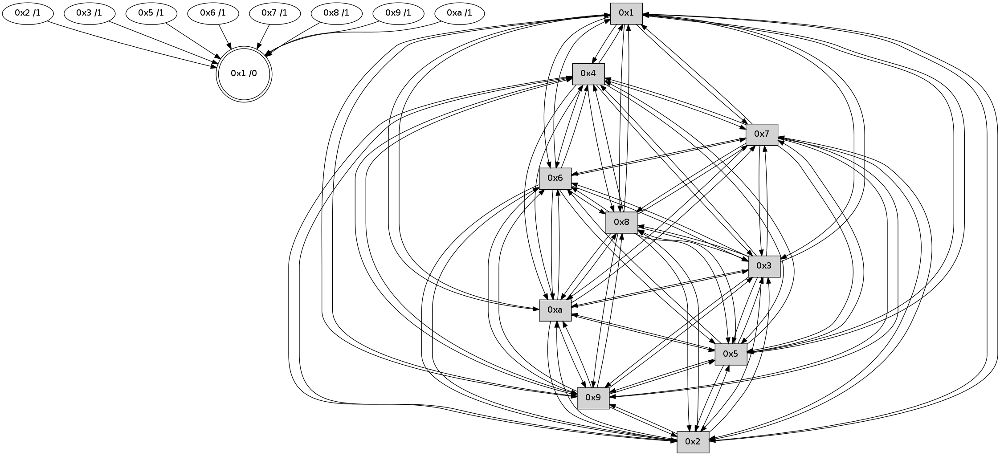

>> << IDX [start] -100 -25 -5 +0 +5 +25 +100 [460.010396004]
 Previous packets
----------------------------------------------------------------------
455.180119 beacon01(faad) #0 coord=01,02,03,04,05,06,07,0a,09,08 cycle=688.0ms assoc
-- color-indic=0 64 f9 be
455.190102 beacon02(faad) #0 coord=01,02,03,04,05,06,07,0a,09,08 cycle=688.0ms assoc 64 6a 8f
455.200102 beacon03(faad) #0 coord=01,02,03,04,05,06,07,0a,09,08 cycle=688.0ms assoc 64 10 c2
455.210103 beacon04(faad) #0 coord=01,02,03,04,05,06,07,0a,09,08 cycle=688.0ms assoc 64 67 28
455.220102 beacon05(faad) #0 coord=01,02,03,04,05,06,07,0a,09,08 cycle=688.0ms assoc 64 1d 65
455.230101 beacon06(faad) #0 coord=01,02,03,04,05,06,07,0a,09,08 cycle=688.0ms assoc 64 93 b2
455.240104 beacon07(faad) #0 coord=01,02,03,04,05,06,07,0a,09,08 cycle=688.0ms assoc 64 e9 ff
455.250107 beacon0a(faad) #0 coord=01,02,03,04,05,06,07,0a,09,08 cycle=688.0ms assoc 64 98 f4
455.260107 beacon09(faad) #0 coord=01,02,03,04,05,06,07,0a,09,08 cycle=688.0ms assoc 64 16 23
455.270108 beacon08(faad) #0 coord=01,02,03,04,05,06,07,0a,09,08 cycle=688.0ms assoc 64 6c 6e
455.285699 [Hello(10): seq=226 sym=6,3,2,8,9,5,7,4,1 sysInfo= stat=6:6,0,0,0/3:12,0,0,0/2:4,0,0,0/8:1,0,0,0/9:10,0,0,0/5:0,0,0,0/7:12,0,0,0/4:10,0,0,0/1:12,0,0,0]
455.288902 [Hello(4): seq=294 sym=5,7,6,2,3,9,8,10,1 sysInfo= stat=5:7,0,0,0/7:15,0,0,0/6:4,0,0,0/2:11,0,0,0/3:2,0,0,0/9:11,0,0,0/8:6,0,0,0/10:5,0,0,0/1:9,0,0,0]
455.292081 [Hello(5): seq=294 sym=7,6,4,3,1,9,8,10,2 sysInfo= stat=7:12,0,0,0/6:0,0,0,0/4:11,0,0,0/3:4,0,0,0/1:10,0,0,0/9:12,0,0,0/8:2,0,0,0/10:9,0,0,0/2:13,0,0,0]
455.295117 [Hello(8): seq=237 sym=5,2,3,4,7,6,9,10,1 sysInfo= stat=5:15,0,0,0/2:6,0,0,0/3:5,0,0,0/4:6,0,0,0/7:2,0,0,0/6:9,0,0,0/9:14,0,0,0/10:13,0,0,0/1:2,0,0,0]
455.303569 [Hello(9): seq=237 sym=5,2,3,4,7,6,8,10,1 sysInfo= stat=5:1,0,0,0/2:8,0,0,0/3:6,0,0,0/4:4,0,0,0/7:3,0,0,0/6:13,0,0,0/8:5,0,0,0/10:14,0,0,0/1:2,0,0,0]
----------------------------------------------------------------------
455.968251 beacon01(faad) #0 coord=01,02,03,04,05,06,07,0a,09,08 cycle=688.0ms assoc
-- color-indic=0 64 cd a6
455.978233 beacon02(faad) #0 coord=01,02,03,04,05,06,07,0a,09,08 cycle=688.0ms assoc 64 5e 97
455.988235 beacon03(faad) #0 coord=01,02,03,04,05,06,07,0a,09,08 cycle=688.0ms assoc 64 24 da
455.998234 beacon04(faad) #0 coord=01,02,03,04,05,06,07,0a,09,08 cycle=688.0ms assoc 64 53 30
456.008235 beacon05(faad) #0 coord=01,02,03,04,05,06,07,0a,09,08 cycle=688.0ms assoc 64 29 7d
456.018234 beacon06(faad) #0 coord=01,02,03,04,05,06,07,0a,09,08 cycle=688.0ms assoc 64 a7 aa
456.028234 beacon07(faad) #0 coord=01,02,03,04,05,06,07,0a,09,08 cycle=688.0ms assoc 64 dd e7
456.038238 beacon0a(faad) #0 coord=01,02,03,04,05,06,07,0a,09,08 cycle=688.0ms assoc 64 ac ec
456.048240 beacon09(faad) #0 coord=01,02,03,04,05,06,07,0a,09,08 cycle=688.0ms assoc 64 22 3b
456.058239 beacon08(faad) #0 coord=01,02,03,04,05,06,07,0a,09,08 cycle=688.0ms assoc 64 58 76
456.070358 [Hello(7): seq=294 sym=2,3,5,6,4,8,9,10,1 sysInfo= stat=2:15,0,0,0/3:12,0,0,0/5:15,0,0,0/6:8,0,0,0/4:9,0,0,0/8:3,0,0,0/9:0,0,0,0/10:11,0,0,0/1:10,0,0,0]
456.073696 [Hello(6): seq=294 sym=2,3,5,4,7,9,8,10,1 sysInfo= stat=2:13,0,0,0/3:1,0,0,0/5:9,0,0,0/4:1,0,0,0/7:4,0,0,0/9:4,0,0,0/8:14,0,0,0/10:11,0,0,0/1:9,0,0,0]
----------------------------------------------------------------------
456.756382 beacon01(faad) #0 coord=01,02,03,04,05,06,07,0a,09,08 cycle=688.0ms assoc
-- color-indic=0 64 71 a3
456.766365 beacon02(faad) #0 coord=01,02,03,04,05,06,07,0a,09,08 cycle=688.0ms assoc 64 e2 92
456.786364 beacon04(faad) #0 coord=01,02,03,04,05,06,07,0a,09,08 cycle=688.0ms assoc 64 ef 35
456.796365 beacon05(faad) #0 coord=01,02,03,04,05,06,07,0a,09,08 cycle=688.0ms assoc 64 95 78
456.806366 beacon06(faad) #0 coord=01,02,03,04,05,06,07,0a,09,08 cycle=688.0ms assoc 64 1b af
456.816366 beacon07(faad) #0 coord=01,02,03,04,05,06,07,0a,09,08 cycle=688.0ms assoc 64 61 e2
456.826370 beacon0a(faad) #0 coord=01,02,03,04,05,06,07,0a,09,08 cycle=688.0ms assoc 64 10 e9
456.836370 beacon09(faad) #0 coord=01,02,03,04,05,06,07,0a,09,08 cycle=688.0ms assoc 64 9e 3e
456.846369 beacon08(faad) #0 coord=01,02,03,04,05,06,07,0a,09,08 cycle=688.0ms assoc 64 e4 73
456.857834 [Hello(5): seq=295 sym=7,6,4,3,1,9,8,10,2 sysInfo= stat=7:13,0,0,0/6:1,0,0,0/4:11,0,0,0/3:4,0,0,0/1:10,0,0,0/9:13,0,0,0/8:3,0,0,0/10:9,0,0,0/2:13,0,0,0]
456.860859 [Hello(3): seq=295 sym=1,7,6,2,4,8,9,10,5 sysInfo= stat=1:3,0,0,0/7:6,0,0,0/6:3,0,0,0/2:13,0,0,0/4:0,0,0,0/8:13,0,0,0/9:7,0,0,0/10:1,0,0,0/5:1,0,0,0]
456.863560 [Hello(2): seq=292 sym=4,5,7,6,3,9,8,10,1 sysInfo= stat=4:4,0,0,0/5:3,0,0,0/7:12,0,0,0/6:1,0,0,0/3:15,0,0,0/9:9,0,0,0/8:14,0,0,0/10:1,0,0,0/1:7,0,0,0]
456.867083 [Hello(9): seq=238 sym=5,2,3,4,7,6,8,10,1 asym= sysInfo= stat=5:1,0,0,0/2:8,0,0,0/3:6,0,0,0/4:4,0,0,0/7:4,0,0,0/6:14,0,0,0/8:5,0,0,0/10:14,0,0,0/1:2,0,0,0]
456.872169 [Hello(10): seq=227 sym=6,3,2,8,9,5,7,4,1 sysInfo= stat=6:7,0,0,0/3:12,0,0,0/2:4,0,0,0/8:2,0,0,0/9:11,0,0,0/5:1,0,0,0/7:13,0,0,0/4:11,0,0,0/1:12,0,0,0]
456.875979 [Hello(4): seq=295 sym=5,7,6,2,3,9,8,10,1 sysInfo= stat=5:8,0,0,0/7:0,0,0,0/6:5,0,0,0/2:11,0,0,0/3:2,0,0,0/9:12,0,0,0/8:7,0,0,0/10:5,0,0,0/1:9,0,0,0]
456.881606 PARSE ERROR************************
Traceback (most recent call last):
File "PacketAnalysis.py", line 167, in showOperaPacket
structPacket = OperaPacketParse.parsePacket(rawPacket)
File "../../pkg-python/HipSens/Core/OperaPacketParse.py", line 461, in parsePacket
return parseHelloMessage(data)
File "../../pkg-python/HipSens/Core/OperaPacketParse.py", line 109, in parseHelloMessage
sysInfo,stability,colorInfo = struct.unpack("!HBB", linkList[0:4])
error: unpack requires a string argument of length 4
48 30 08 00 00 ee 00 02 02 10 05 00 02 00 03 00 07 00 06 00 09 00 0a 00 01 00 53 04 00 00 00 00 4c 10 00 0f 00 06 00 05 00 02 00 0a 00 0f 00 0d 00 02 53 b9
----------------------------------------------------------------------
457.544514 beacon01(faad) #0 coord=01,02,03,04,05,06,07,0a,09,08 cycle=688.0ms assoc
-- color-indic=0 64 b5 ad
457.554496 beacon02(faad) #0 coord=01,02,03,04,05,06,07,0a,09,08 cycle=688.0ms assoc 64 26 9c
457.564496 beacon03(faad) #0 coord=01,02,03,04,05,06,07,0a,09,08 cycle=688.0ms assoc 64 5c d1
457.574497 beacon04(faad) #0 coord=01,02,03,04,05,06,07,0a,09,08 cycle=688.0ms assoc 64 2b 3b
457.584498 beacon05(faad) #0 coord=01,02,03,04,05,06,07,0a,09,08 cycle=688.0ms assoc 64 51 76
457.594497 beacon06(faad) #0 coord=01,02,03,04,05,06,07,0a,09,08 cycle=688.0ms assoc 64 df a1
457.604498 beacon07(faad) #0 coord=01,02,03,04,05,06,07,0a,09,08 cycle=688.0ms assoc 64 a5 ec
457.614504 beacon0a(faad) #0 coord=01,02,03,04,05,06,07,0a,09,08 cycle=688.0ms assoc 64 d4 e7
457.624504 beacon09(faad) #0 coord=01,02,03,04,05,06,07,0a,09,08 cycle=688.0ms assoc 64 5a 30
457.634504 beacon08(faad) #0 coord=01,02,03,04,05,06,07,0a,09,08 cycle=688.0ms assoc 64 20 7d
457.645672 [Hello(7): seq=295 sym=2,3,5,6,4,8,9,10,1 sysInfo= stat=2:0,0,0,0/3:13,0,0,0/5:0,0,0,0/6:9,0,0,0/4:10,0,0,0/8:4,0,0,0/9:1,0,0,0/10:12,0,0,0/1:10,0,0,0]
457.649673 [Hello(1): seq=204 sym=4,2,9,5,10,3,8,6,7 sysInfo= stat=4:15,0,0,0/2:8,0,0,0/9:8,0,0,0/5:4,0,0,0/10:7,0,0,0/3:13,0,0,0/8:8,0,0,0/6:14,0,0,0/7:5,0,0,0]
457.657737 [Hello(6): seq=295 sym=2,3,5,4,7,9,8,10,1 sysInfo= stat=2:14,0,0,0/3:2,0,0,0/5:10,0,0,0/4:2,0,0,0/7:4,0,0,0/9:5,0,0,0/8:15,0,0,0/10:12,0,0,0/1:9,0,0,0]
----------------------------------------------------------------------
458.332647 beacon01(faad) #0 coord=01,02,03,04,05,06,07,0a,09,08 cycle=688.0ms assoc
-- color-indic=0 64 09 a8
458.342629 beacon02(faad) #0 coord=01,02,03,04,05,06,07,0a,09,08 cycle=688.0ms assoc 64 9a 99
458.352631 beacon03(faad) #0 coord=01,02,03,04,05,06,07,0a,09,08 cycle=688.0ms assoc 64 e0 d4
458.362631 beacon04(faad) #0 coord=01,02,03,04,05,06,07,0a,09,08 cycle=688.0ms assoc 64 97 3e
458.372630 beacon05(faad) #0 coord=01,02,03,04,05,06,07,0a,09,08 cycle=688.0ms assoc 64 ed 73
458.382629 beacon06(faad) #0 coord=01,02,03,04,05,06,07,0a,09,08 cycle=688.0ms assoc 64 63 a4
458.392632 beacon07(faad) #0 coord=01,02,03,04,05,06,07,0a,09,08 cycle=688.0ms assoc 64 19 e9
458.402634 beacon0a(faad) #0 coord=01,02,03,04,05,06,07,0a,09,08 cycle=688.0ms assoc 64 68 e2
458.412635 beacon09(faad) #0 coord=01,02,03,04,05,06,07,0a,09,08 cycle=688.0ms assoc 64 e6 35
458.422635 beacon08(faad) #0 coord=01,02,03,04,05,06,07,0a,09,08 cycle=688.0ms assoc 64 9c 78
458.433799 [Hello(4): seq=296 sym=5,7,6,2,3,9,8,10,1 sysInfo= stat=5:8,0,0,0/7:1,0,0,0/6:6,0,0,0/2:11,0,0,0/3:2,0,0,0/9:12,0,0,0/8:8,0,0,0/10:5,0,0,0/1:10,0,0,0]
458.439019 [Hello(10): seq=228 sym=6,3,2,8,9,5,7,4,1 sysInfo= stat=6:8,0,0,0/3:12,0,0,0/2:4,0,0,0/8:3,0,0,0/9:11,0,0,0/5:1,0,0,0/7:14,0,0,0/4:12,0,0,0/1:13,0,0,0]
458.443467 [Hello(9): seq=239 sym=5,2,3,4,7,6,8,10,1 asym= sysInfo= stat=5:1,0,0,0/2:8,0,0,0/3:6,0,0,0/4:5,0,0,0/7:5,0,0,0/6:15,0,0,0/8:6,0,0,0/10:15,0,0,0/1:3,0,0,0]
458.448287 [Hello(2): seq=293 sym=4,5,7,6,3,9,8,10,1 sysInfo= stat=4:5,0,0,0/5:3,0,0,0/7:13,0,0,0/6:2,0,0,0/3:15,0,0,0/9:10,0,0,0/8:15,0,0,0/10:2,0,0,0/1:8,0,0,0]
458.452253 [Hello(3): seq=296 sym=1,7,6,2,4,8,9,10,5 sysInfo= stat=1:4,0,0,0/7:7,0,0,0/6:4,0,0,0/2:14,0,0,0/4:1,0,0,0/8:14,0,0,0/9:8,0,0,0/10:2,0,0,0/5:1,0,0,0]
458.455582 [STC(1) #0.1 to-color d=0]
----------------------------------------------------------------------
459.120780 beacon01(faad) #0 coord=01,02,03,04,05,06,07,0a,09,08 cycle=688.0ms assoc
-- color-indic=0 64 dd 9d
459.130763 beacon02(faad) #0 coord=01,02,03,04,05,06,07,0a,09,08 cycle=688.0ms assoc 64 4e ac
459.140762 beacon03(faad) #0 coord=01,02,03,04,05,06,07,0a,09,08 cycle=688.0ms assoc 64 34 e1
459.150763 beacon04(faad) #0 coord=01,02,03,04,05,06,07,0a,09,08 cycle=688.0ms assoc 64 43 0b
459.160764 beacon05(faad) #0 coord=01,02,03,04,05,06,07,0a,09,08 cycle=688.0ms assoc 64 39 46
459.170764 beacon06(faad) #0 coord=01,02,03,04,05,06,07,0a,09,08 cycle=688.0ms assoc 64 b7 91
459.180764 beacon07(faad) #0 coord=01,02,03,04,05,06,07,0a,09,08 cycle=688.0ms assoc 64 cd dc
459.190768 beacon0a(faad) #0 coord=01,02,03,04,05,06,07,0a,09,08 cycle=688.0ms assoc 64 bc d7
459.200768 beacon09(faad) #0 coord=01,02,03,04,05,06,07,0a,09,08 cycle=688.0ms assoc 64 32 00
459.210770 beacon08(faad) #0 coord=01,02,03,04,05,06,07,0a,09,08 cycle=688.0ms assoc 64 48 4d
459.221709 [STC(2)->1 #0.1 to-color d=1]
459.223286 [STC(10)->1 #0.1 to-color d=1]
459.226297 [STC(3)->1 #0.1 to-color d=1]
459.227557 [STC(5)->1 #0.1 to-color d=1]
459.230793 [Hello(7): seq=296 sym=2,3,5,6,4,8,9,10,1 sysInfo= stat=2:1,0,0,0/3:14,0,0,0/5:1,0,0,0/6:10,0,0,0/4:11,0,0,0/8:4,0,0,0/9:2,0,0,0/10:13,0,0,0/1:11,0,1,0]
459.234312 [Hello(6): seq=296 sym=2,3,5,4,7,9,8,10,1 sysInfo= stat=2:15,0,0,0/3:3,0,0,0/5:10,0,0,0/4:3,0,0,0/7:4,0,0,0/9:6,0,0,0/8:0,0,0,0/10:13,0,0,0/1:9,0,1,0]
459.237264 [STC(9)->1 #0.1 to-color d=1]
459.240333 [STC(8)->1 #0.1 to-color d=1]
459.241878 [STC(7)->1 #0.1 to-color d=1]
459.248278 [STC(6)->1 #0.1 to-color d=1]
----------------------------------------------------------------------
459.908911 beacon01(faad) #0 coord=01,02,03,04,05,06,07,0a,09,08 cycle=688.0ms assoc
-- color-indic=0 64 61 98
459.918894 beacon02(faad) #0 coord=01,02,03,04,05,06,07,0a,09,08 cycle=688.0ms assoc 64 f2 a9
459.928894 beacon03(faad) #0 coord=01,02,03,04,05,06,07,0a,09,08 cycle=688.0ms assoc 64 88 e4
459.938894 beacon04(faad) #0 coord=01,02,03,04,05,06,07,0a,09,08 cycle=688.0ms assoc 64 ff 0e
459.948894 beacon05(faad) #0 coord=01,02,03,04,05,06,07,0a,09,08 cycle=688.0ms assoc 64 85 43
459.958894 beacon06(faad) #0 coord=01,02,03,04,05,06,07,0a,09,08 cycle=688.0ms assoc 64 0b 94
459.968894 beacon07(faad) #0 coord=01,02,03,04,05,06,07,0a,09,08 cycle=688.0ms assoc 64 71 d9
459.978898 beacon0a(faad) #0 coord=01,02,03,04,05,06,07,0a,09,08 cycle=688.0ms assoc 64 00 d2
459.988901 beacon09(faad) #0 coord=01,02,03,04,05,06,07,0a,09,08 cycle=688.0ms assoc 64 8e 05
459.998900 beacon08(faad) #0 coord=01,02,03,04,05,06,07,0a,09,08 cycle=688.0ms assoc 64 f4 48